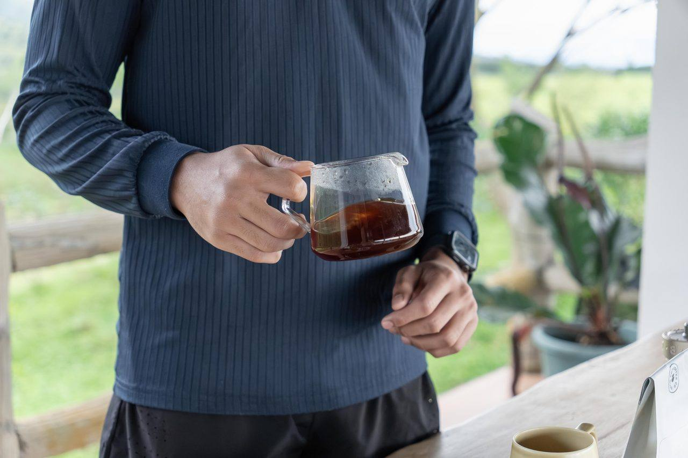

Specialty Coffee
Carefully Grown,
Patiently Processed.
Three offerings. One story of patience and purpose.
what makes it different
The land speaks through every bean.
Specialty coffee is never accidental. It is the result of the right variety, grown in the right place, tended by hands that understand what patience and care make possible. At Finca de Garces, our coffee begins in the highlands of Pangantucan, Bukidnon — nestled in the shadow of Mt. Kalatungan at an elevation that slows the cherry's ripening, concentrating sugars and building layers of flavor that flat-grown coffee simply cannot produce.
Bukidnon's cool nights, generous rainfall, and rich volcanic soil are not incidental gifts — they are the terroir we steward every season. We farm slowly, harvest selectively, and process with as much care as we give the growing itself. The result is coffee that is clean, complex, and honest: a true expression of this highland place, not a product engineered to satisfy a trend.
We offer three things: green beans for roasters who want to work with traceable, highland-grown specialty coffee; small-batch roasted coffee for those who prefer it ready; and seedlings for farmers who are ready to begin their own journey toward quality. Each offering is an invitation to a longer conversation about this farm and the work behind it.

Green Beans
Highland grown. Selectively harvested. Built for the discerning roaster.
Our green beans leave the farm as close to their natural complexity as careful processing allows. We harvest by hand, selecting only cherries at peak ripeness — the result of years of learning to read the fruit the way this mountain grows it. Each lot is processed with patience — washed, honey, natural, or our signature Full Moon natural — and rested until it is genuinely ready.
The flavor profile of Bukidnon highland coffee reflects its origins: the cool, unhurried growing season, the volcanic soil, the altitude. As a roaster, you receive a canvas already doing much of the work — a bean with structural integrity, consistent moisture, and genuine terroir character.
Varieties Grown
Processing Methods
Elevation
1,300–1,400 MASL · the slopes of Mt. Kalatungan, Pangantucan, Bukidnon
Tasting Notes by Process
Natural
Dark chocolate, green apple, durian, mangosteen
Honey
Honey, orange, chamomile, grapes
Full Moon Natural
Kiwi, mandarin orange, orange blossom, honey
We work with roasters who share our belief that traceability is not a marketing feature — it is a mark of respect for the people who grew the coffee and the community it supports. We are glad to share the story of each lot, the processing method, and the practices behind it.
Inquire About Green Beans
Roasted Coffee
Small-batch roasted to let the origin speak, not the process.
When we roast, our one intention is clarity. We want the character of the bean — built into it over months of growing, harvesting, and processing — to arrive in your cup as faithfully as possible. We roast in small batches, carefully, unhurried, calibrating each lot to its own particular qualities rather than forcing every bean through the same profile.
The result is a coffee with warmth and depth that reflects the highlands it came from: not sharp, not hollow, but honest. There is a roundness in a well-grown Bukidnon bean that small-batch roasting preserves rather than obscures, and that is what we work toward with every roast.
Cup Profile
Caramel, orange-peel zest, floral notes, a nutty depth, and a clean, tea-like finish — the descriptors our highland lot earned on the national stage in 2025.
We offer roasted coffee to cafés looking for a single-origin Bukidnon option with a story they can share, and to enthusiasts who want something grown with genuine intention. Like everything on this farm, it is made to be savored — not rushed.
Inquire About Roasted Coffee
Seedlings
The beginning of every great coffee is a seed tended with care.
Our seedling program is where curiosity lives on this farm. We work with experimental varieties, studying how different genetics respond to our highland environment — watching how each plant develops, how it handles the altitude, the soil, the season. It is slow, methodical work without guaranteed outcomes, and that is precisely why we find it meaningful.
Not every variety we trial will make it into production. But the ones that do have earned their place through observation and patience, not assumption. We nursery our seedlings carefully, giving each plant the conditions and attention it needs to reach healthy, viable growth before it ever leaves this farm.
We make seedlings available to farmers who are genuinely ready to grow specialty coffee with intention. If you are a farmer thinking seriously about the quality side of your crop — the varieties, the practices, the potential of your land — we would like to talk. We do not just hand over a seedling; we want to understand your context and grow alongside you.
Varieties We Trial
Ethiopian Genetics
Our “Sweet Coffee” traces back to an Ethiopian heirloom landrace — confirmed through World Coffee Research DNA testing — prized for its resilience, flavor complexity, and adaptability to our highland climate. Tasted blind, it is clean enough to be mistaken for an Ethiopian origin.
let’s connect
The land speaks through every bean.
Whether you are a specialty roaster looking for a highland Philippine origin, a café seeking something with an honest story, or a farmer ready to grow quality coffee — we would love to hear from you. Every inquiry is answered by the people who actually tend this farm.
Inquire Now